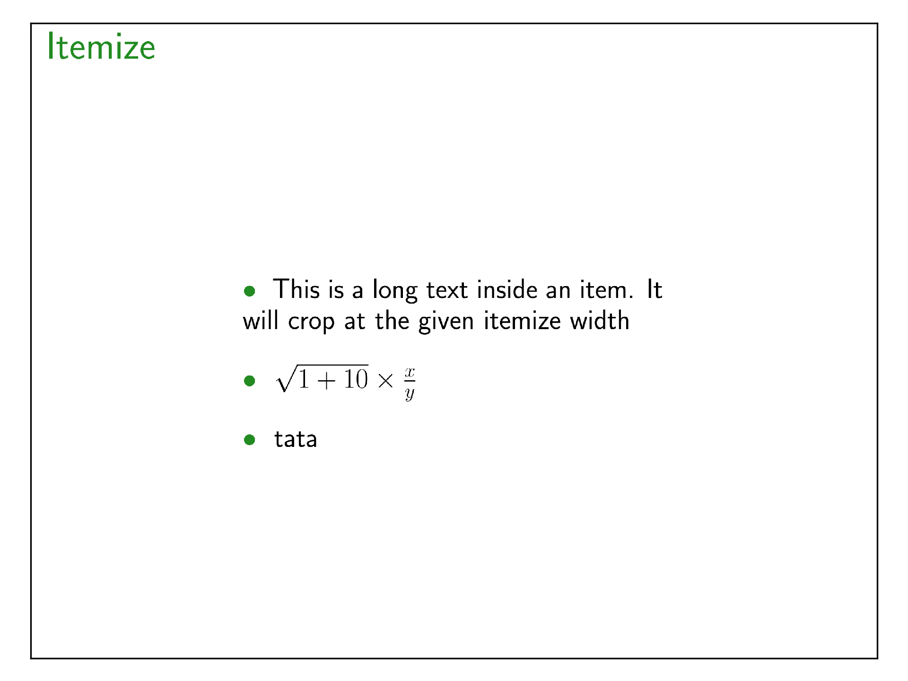

itemize
Create a list or an enumeration of items from an input python list of strings.
from beampy import *
# Remove quiet=True to get Beampy render outputs
doc = document(quiet=True)
with slide('Itemize'):
itemize(['''This is a long text inside an item.
It will crop at the given itemize width''',
r'\sqrt{1+10} \times \frac{x}{y}',
'tata'],
width=400
)
display_matplotlib(gcs())

Module arguments
-
beampy.itemize(items_list, **kwargs)
Generates a list or an enumeration.
| Parameters: |
- items_list (list of str) – List of item sentences.
- x (int or float or {'center', 'auto'} or str, optional) – Horizontal position for the item list (the default is ‘center’). See
positioning system of Beampy.
- y (int or float or {'center', 'auto'} or str, optional) – Vertical position for the item list (the default is ‘auto’). See
positioning system of Beampy.
- width (int or float or None, optional) – Width of the group containing items (the default is None, which implies
that the width is computed to fit the longest item width).
- item_style ({'bullet','number'} or str, optional) – Style of the item markers (the default theme sets this value to
‘bullet’, which implies that item marker decorator is a bullet). The
bullet could be replaced by any string, including latex symbols. When
`item_style`=’number’, the item makers is an increasing number to
create an enumeration.
- item_spacing (int or float or str, optional) – Vertical spacing between items (the default theme sets this value to
‘+1cm’). item_spacing accepts the same values as Beampy x or y.
- item_indent (int or float or str, optional) – Horizontal item indent (the default theme sets this value to ‘0cm’).
item_indent accepts the same values as Beampy x or y.
- item_color (str, optional) – Color of item marker (the default theme sets this value to
doc._theme[‘title’][‘color’]). Color could be given as svg-color-names
or HTML color hex values (expl: #fffff for white).
- text_color (str, optional) – Color of the item texts (the default theme sets this value to
doc._theme[‘text’][‘color’]). Color could be given as svg-color-names
or HTML color hex values (expl: #fffff for white).
- item_layers ((list of int or string) or None, optional) –
Place items into layers to animate them (the default theme sets this
value to None, which implies that all items are displayed on the same
layer). The list should have the same length as the items_list. The
item in item_layers list could refers to a given layer number, given
as int, or use python list index syntax (like ‘:’, ‘:-1’, ‘3:’) given
as string.
>>> itemize([‘item1 on all layers’, ‘item2 on layer 1’],
item_layers=[‘:’,1])
|
|---|
Gallery generated by Sphinx-Gallery